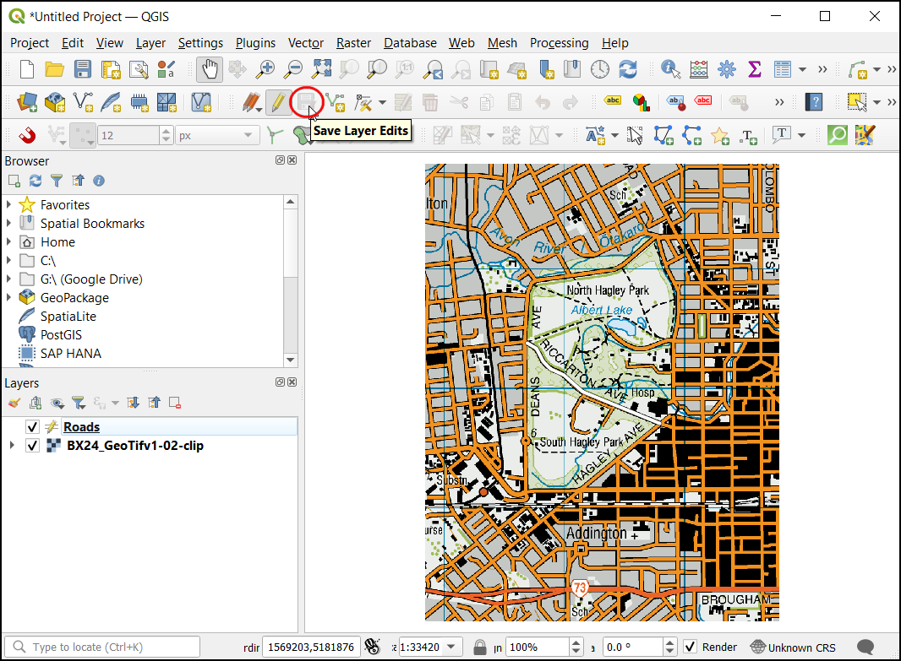
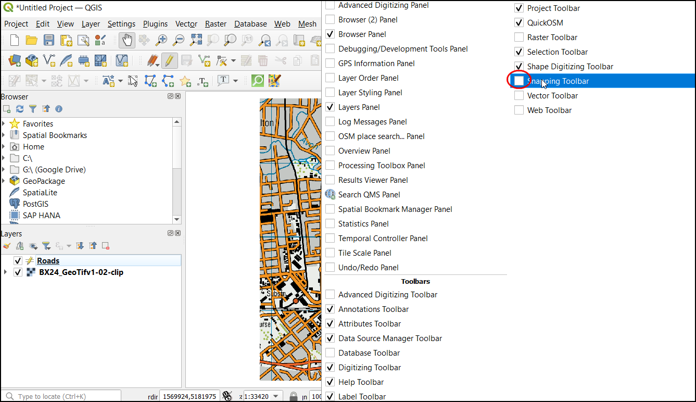
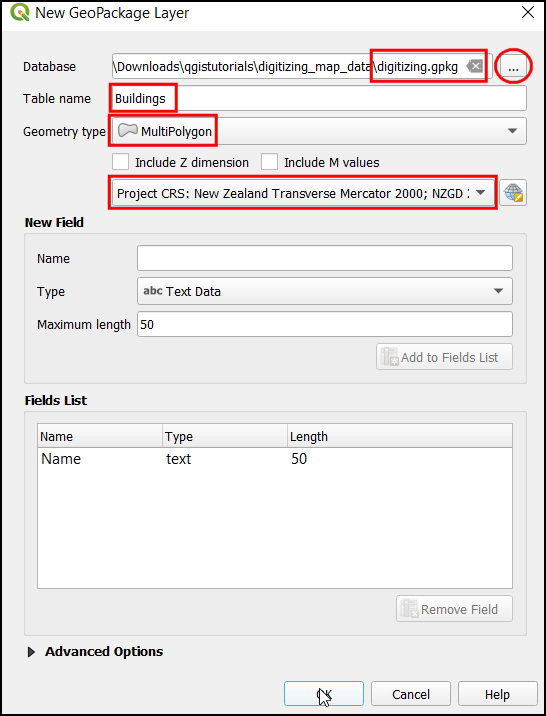
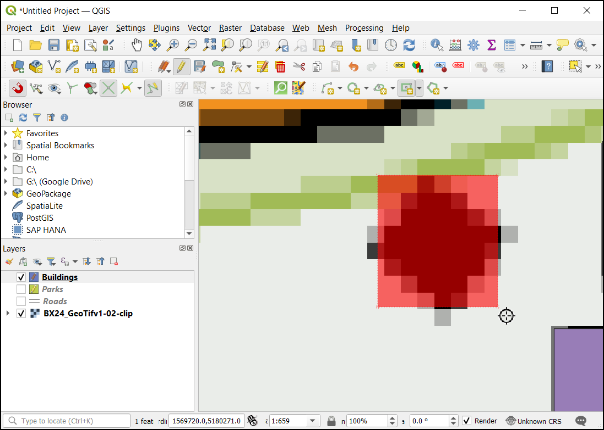
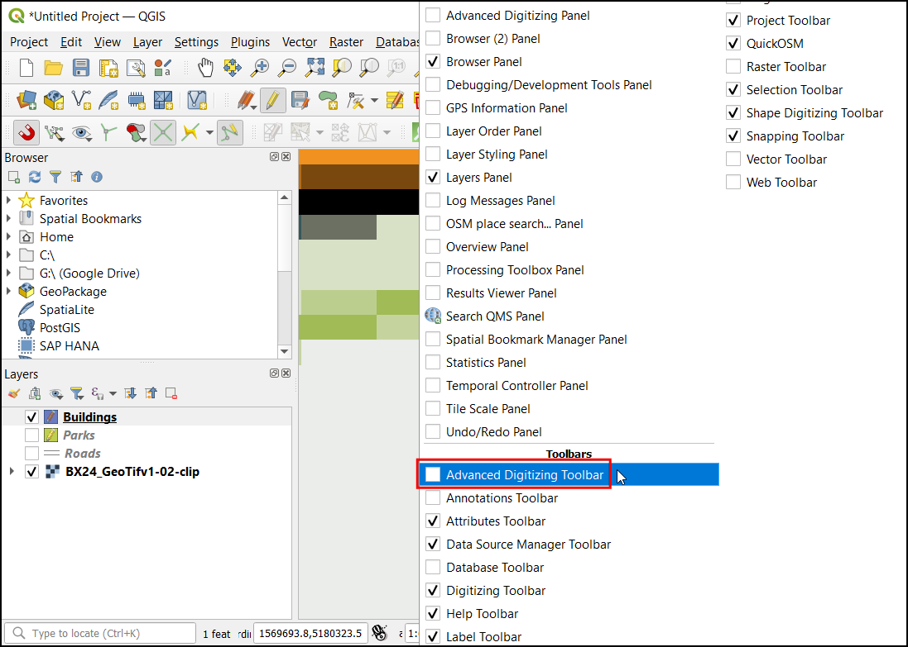

Ujaval Gandhi
Ujaval GandhiDigitalizacija podatkov (QGIS3)¶
Digitalizacija ali vektorizacija je eden od najpogostejših postopkov, ki ga srečamo pri delu z geografskimi informacijskimi sistemi. Pogosto velik ali celo največji del časa GIS porabimo za digitalizacijo rastrskih podatkov in pridobivanje vektorskih podatkov za analize. QGIS ima zelo zmogljivo orodje za zaslonsko digitalizacijo, ki ga bomo preizkusili v tej vadnici.
Pregled naloge¶
Uporabili bomo rastrsko topografsko karto in ustvarili več vektorskih slojev s podatki o objektih v okolici parka.
Other skills you will learn¶
Kako ustvariti piramidne sloje (pyramids), ki pospešijo prikaz (zoomiranje, premikanje) in delo z velikimi rastri.
Ustvarjanje in urejanje GeoPackage.
Pridobivanje podatkov¶
Spletna stran Land Information New Zealand (LINZ) ponuja rastrske topografske karte v merilu 1:50.000 scale za Novo Zelandijo in bližnje otoke.
Poberite slikovno datoteko GeoTIFF s spletnega naslova Topo50 map BX24 - Christchurch.
Lahko jih poberete tudi neposredno na spodnji povezavi:
Vir podatkov [LINZ]
Postopek¶
V QGIS naložimo rastrsko datoteko. Pojdite na .

V pogovornem oknu Data Source Manager izberite Raster. Pod Source kliknite na
...in poiščite preneseniBX24_GeoTifv1-02.tifter kliknite Open. Nato kliknite Add in nato Close.

Gre za veliko rastrsko sliko in morda boste opazili počasen prikaz med zoomiranjem in premikanjem na rastru. QGIS vsebuje elegantno rešitev, s katero močno pospešimo prikaze rastrov - ustvarjanje piramidnih slojev (Image Pyramids). Program pripravi sliko v različnih ločljivostih, tako imenovane piramidne ploščice, in nato prikazuje te namesto polnega rastra. Gibanje po karti je zato veliko bolj gladko, prikaz pa hitrejši. Desno kliknite sloj
BX24_GeoTifv1-02in izberite Properties.

V pogovornem oknu Layer Properties izberite zavihek Pyramids. Držite tipko Ctrl in izberite vse ponujene ločljivosti na plošči Resolutions. Druge možnosti pustite privzete in kliknite Build pyramids.

Ko se postopek konča, bodo v pogovornem oknu prikazane piramide brez križca. To pomeni, da je gradnja slikovnih piramid končana. Kliknite OK.

Preden začnemo, moramo pripraviti pravilne privzete možnosti za digitalizacijo. Izberite meni .

V pogovornem oknu Options izberite zavihek Digitizing. V razdelku Snapping označite možnost Enable snapping by default. V razdelku Default snap mode izberite Vertex. To vam bo omogočilo pripenjanje na najbližji vrh. Prav tako raje nastavim Default snapping tolerance in Search radius for vertex edits v pikslih namesto v enotah karte. To bo zagotovilo, da bo razdalja pripenjanja ostala konstantna ne glede na stopnjo povečave. Glede na ločljivost zaslona vašega računalnika lahko izberete ustrezno vrednost. Kliknite OK.

Zdaj smo pripravljeni na digitalizacijo. Najprej bomo ustvarili sloj cest in digitalizirali ceste na območju parka. Kliknite ikono na plošči. GeoPackage je odprt, nelastniški, od platforme neodvisen in na standardih temelječ podatkovni format za geografski informacijski sistem, ki se izvaja kot vsebnik podatkovne zbirke SQLite. Tako ga je veliko lažje premikati naokoli namesto kopice shapefileov. V tem učbeniku ustvarimo nekaj poligonskih slojev in linijski sloj, tako da bo paket GeoPackage bolj primeren. Vedno lahko naložite GeoPackage in izvozite plasti kot shapefile ali katero koli drugo obliko, ki jo želite.

V pogovornem oknu New GeoPackage Layer kliknite gumb … in shranite novo podatkovno bazo GeoPackage z imenom
digitizing.gpkg. Izberite Table name kotRoadsin izberiteLineStringkot Geometry type. Osnovni topografski zemljevid je CRSEPSG:2193 - NZGD 2000.

Ko ustvarjate sloj GIS, morate določiti atribute vsakega elementa. Ker gre za cestni sloj, bomo dodatno uporabili dva primarna atributa - ime in razred. V polje New Field vnesite
Nametipa Text data, z50`kot Maximum length in kliknite Add to attribute list. Zdaj ustvarite nov atributClasstipa Text data, z50kot Maximum length. Kliknite OK

Ko je sloj
Roadsnaložen, kliknite gumb Toggle Editing, da sloj preklopite v način urejanja.

Kliknite gumb Add Line Feature. Kliknite na delovno površino, da dodate novo vozlišče. Dodajte nova oglišča skupaj z elementom ceste. Ko digitalizirate cestni odsek, z desnim klikom končajte element.

Opomba
Med digitalizacijo lahko s kolescem za pomikanje miške povečujete ali zmanjšujete. Za pomikanje lahko tudi držite gumb za pomikanje in premikate miško.
Ko z desnim klikom končate funkcijo, se prikaže pojavno okno z imenom Road - Feature Attributes. Tu lahko vnesete atribute novo ustvarjenega elementa. Preskočite vnos vrednosti za fid, saj gre za zaporedni id, ki se bo samodejno generiral. Vnesite ime ceste, kot je prikazano na topo karti. Po želji določite tudi vrednost razreda ceste. Kliknite OK.

Privzet slog novega sloja črt je tanka črta. Spremenimo ga, da bomo bolje videli digitalizirane elemente na platnu. Izberite sloj
Roadsin kliknite Layer Styling Panel.

V podoknu Layer Styling Panel poiščite različne sloge plasti road. Izberite
topo road. Kliknite OK.

Zdaj bo sloj ceste jasno viden. Če ste z delom zadovoljni, kliknite gumb Save Layer Edits, da shranite spremembe.

Preden digitaliziramo preostale ceste, je treba posodobiti še nekatere druge pomembne nastavitve, da ustvarimo sloj brez napak. Z desno tipko miške kliknite na poljubno mesto na območju orodne vrstice in aktivirajte Snapping toolbar.

Zdaj se bo na plošči pojavil Enable Snapping (magneta ikona). Kliknite nanj, da ga omogočite, in izberite All Layers ter izberite
Open Snapping Options...

V pogovornem oknu Snapping options kliknite Snapping on Intersection, ki vam omogoča prijem na presečišče plasti ozadja.

Zdaj lahko kliknete gumb Add feature in digitalizirate druge ceste v okolici parka. Po dodajanju novega elementa obvezno kliknite Save Edits, da shranite svoje delo. Koristno orodje, ki vam bo pomagalo pri digitalizaciji, je orodje Vertex Tool. Kliknite gumb Vertex Tool in izberite
Vertex Tool (Current Layer).

Ko je orodje za vozlišča aktivirano, kliknite na kateri koli element, da se prikažejo vozlišča. Kliknite na katerikoli vozlišče, da ga izberete. Ko je izbrano, se mu spremeni barva. Zdaj lahko kliknete in povlečete miško, da premaknete vozlišče. To je uporabno, kadar želite po ustvarjanju elementa opraviti prilagoditve. Izbrano vozlišče lahko tudi izbrišete s klikom na tipko Delete. (Option+Delete na računalniku mac)

Ko končate z digitalizacijo vseh cest, kliknite gumb Toggle Editing. Kliknite Save.

Zdaj bomo ustvarili še en sloj za digitalizacijo parkov v obliki poligonov. Kliknite ikono na plošči. V pogovornem oknu New GeoPackage Layer kliknite gumb … in izberite podatkovno zbirko GeoPackage z imenom
digitizing.gpkg. Novo plast poimenujte kot atribut z imenomParks. Kot parameter Type izberiteMultiPolygon. Osnovni topografski zemljevid jeEPSG:2193 - NZGD 2000CRS. Kliknite OK. V polje Novo polje vnesiteNamestoin Trip` kot Tekstni podatki`, pri čemer je50kot Maksimalna dolžina` in kliknite Dodaj na seznam polj.. Kliknite OK.

Opomba
Poligon in večpoligon
Poligon - Ravninska površina, opredeljena z 1 zunanjo mejo in 0 ali več notranjimi mejami. Vsaka notranja meja določa luknjo v poligonu.
Večpoligon - Uporablja se za predstavitev območij z luknjami v notranjosti ali območij, ki so sestavljena iz več ločenih območij. Na primer 3 prekinjene poligone lahko narišete in združite kot en sam element.
Pojavilo se bo pojavno pogovorno okno. Izberite gumb Add New Layer.

Zdaj izberite sloj
Parki, nato kliknite na cesto Toggle Editing in kliknite gumb Add feature ter kliknite na platno zemljevida, da dodate vozlišče poligona. Digitalizirajte poligon, ki predstavlja park. Prepričajte se, da se pripenjate na vrhove ceste, da med poligoni parka in linijami ceste ne bo vrzeli. Z desnim klikom dokončajte poligon.

Vnesite ime parka v pojavno okno Parks - Feature Attributes.

Zdaj digitalizirajte zgornji del parka. Vnesite ime parka in shranite spremembe.

Pred digitalizacijo notranjega poligona nastavimo nastavitve, ki lahko olajšajo delo. Sloje z več poligoni ponujajo še eno uporabno nastavitev, imenovano Avoid intersections of new polygons. Izberite Enable Snapping (magneta ikona), kliknite nanj, da ga omogočite, in kliknite All Layers ter izberite
Advanced Configuration.

V orodni vrstici za pripenjanje kliknite gumb
Avoid Overlap on Active layers.

Zdaj v razdelku Edit Advanced Configuration izberite Units kot
pixels.

Označite polje v stolpcu Avoid Overlap v vrstici za sloj
Parks.

Kliknite na Add feature za dodajanje poligona. S funkcijo Avoid Overlap boste lahko hitro digitalizirali nov poligon, ne da bi vas skrbelo, ali se bo natančno prilegal sosednjim poligonom.

Z desnim klikom dokončajte poligon in vnesite atribute. Novi poligon se čudežno skrči in pritrdi točno na mejo sosednjih poligonov! To je zelo uporabno pri digitalizaciji zapletenih mej, kjer vam ni treba biti natančni in še vedno imeti topološko pravilen poligon. Kliknite Toggle Editing (preklopi urejanje), da končate urejanje sloja
Parks.

Zdaj je čas za digitalizacijo plasti stavb. Ustvarite novo poligonsko plast z imenom
Buildingss klikom na ikono na plošči. Nastavite Buildings in MuiltiPolygon. Izberite CRS kotEPSG:2193 - NZGD 2000. Kliknite OK.

Ko je dodan sloj
Buildings, izklopite plastiParksinRoads, da bo osnovni topografski zemljevid viden. Izberite slojBuildingsin kliknite Toggle Editing.

Digitalizacija stavb je lahko težavno opravilo, poleg tega je ročno dodajanje vozlišč, tako da so robovi pravokotni in tvorijo pravokotnik, zahtevno. Za pomoč pri tej nalogi bomo uporabili orodno vrstico QGIS z imenom Shape Digitizing. Z desno tipko miške kliknite na katero koli prazno mesto na območju orodne vrstice in aktivirajte orodno vrstico
Shape Digitizing Toolbar.

Omogočite urejanje s pritiskom na ikono svinčnika Toggle Editing.

Zdaj v spustni vrstici Add Rectangle izberite gumb Add Rectangle from Extent.

Približajte območje s stavbami. Kliknite in povlecite miško, da narišete popoln pravokotnik. Podobno dodajte preostale stavbe.

Opazili boste, da nekatere stavbe niso navpične, zato bomo morali narisati pravokotnik pod kotom, da bo ustrezal površini stavbe. V spustni vrstici Add Rectangle izberite gumb Add Rectangle from Center and a Point.

Približajte območje stavb v obliki romba. Kliknite na sredino, da spustite točko, in povlecite miško, da narišete pravokotnik.

Zdaj ga moramo zavrteti, da bo ustrezal stanju na karti. Orodje za vrtenje ne na voljo v orodjarni Advanced Digitizing. Desno kliknite kjerkoli v orodjarni in omogočite orodjarno Advanced Digitizing.

Kliknite gumb Rotate Feature.

Izberite orodje Select Single feature, da izberete samo poligon, ki ga želite vrteti. Ko izberete orodje Rotate Feature(s) boste opazili križec v sredini poligona. Kliknite križec in z miško zavrtite poligon. Pokazal se bo pregled novega stanja in ko ste zadovoljni s položajem spustite miško.

Shranite ureditve plasti in kliknite Toggle Editing, ko končate digitalizacijo vseh stavb. Sloje lahko povlečete, da spremenite njihov vrstni red. Naloga digitalizacije je zdaj končana. Igrate se lahko z možnostmi oblikovanja in označevanja v lastnostih slojev, da iz ustvarjenih podatkov ustvarite lepo karto.
If you want to give feedback or share your experience with this tutorial, please comment below. (requires GitHub account)